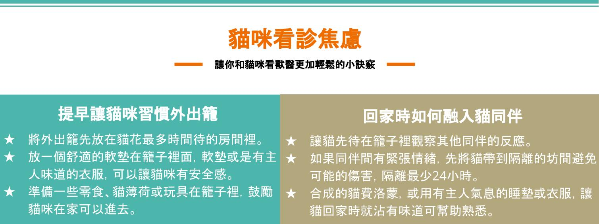

2022-02-09
貓咪看診焦慮
提供好的健康照護，特別是預防醫學檢查，可以讓貓寶貝活的更久、更舒服。然而貓咪外出看醫生總是好緊張？其實貓咪外出要做好充足準備， 貓咪喜歡熟悉的事物，需要一些時間去習慣不熟悉的事物，去看獸醫從外出籠、汽車(交通工具)、和動物醫院都是不熟悉的，因此在外出前、外出籠及直到返家都有許多細節要注意，減輕看診焦慮才能保護貓咪、飼主及獸醫安全。
除了貓咪，飼主本人保持冷靜的情緒也很重要，貓咪可以感覺得到我們的焦慮和挫折感，這些都會造成貓咪變得恐懼和焦慮。貓咪無法從懲罰或強迫來學習，需要用獎賞來鼓勵表現好的事情。舉例來說，如果你的貓冷靜的坐在貓籠或是接近貓籠，給貓一些獎勵。同樣的，獸醫進行檢查操作（檢查腳掌、耳朵和嘴巴），都可以給予獎勵，譲貓可以接受熟悉這些檢查。獎勵必須依照你的貓的喜愛，可以是食物、玩具或是安慰獎勵的動作表現，都要持續地獎勵每一次表現。
以下幾個訣竅可以讓你和貓寶貝去看獸醫輕鬆一點：

哪一種籠子比較好？
不昂貴，有堅固的外殼，在籠子上面和前面都有開口，而且可以從中間拆開成上下兩部分。輕易地拆開籠子上半部，可以讓很緊張、焦慮和很痛的貓待在下半部籠子接受檢查。你的獸醫多半都可以在設計良好的下半部籠子幫貓咪檢查。避免要將貓拉出來或用倒的，才能出來檢查的籠子。
挑一個粗壯、安全和穩定的籠子，可以輕易的攜帶。籠子應該用安全帶固定住，保持安全減少行車間的跳動。有一些貓喜歡看外面，但也有貓用毯子或毛巾蓋住看不到不熟悉的東西，可以減少焦慮。
文章來源：Getting your cat to the veterinarian , ISFM